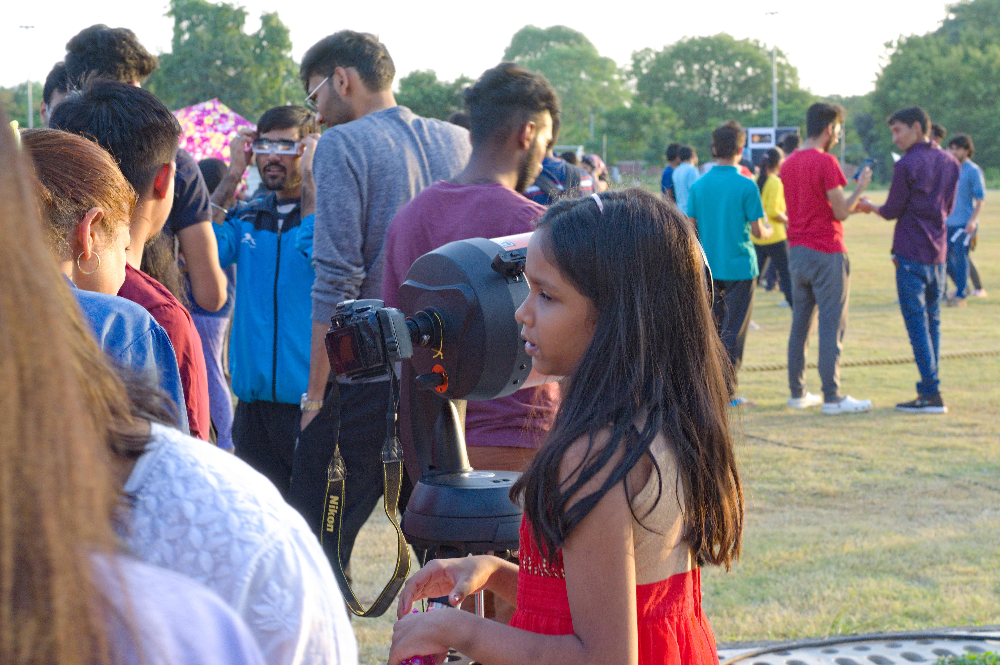
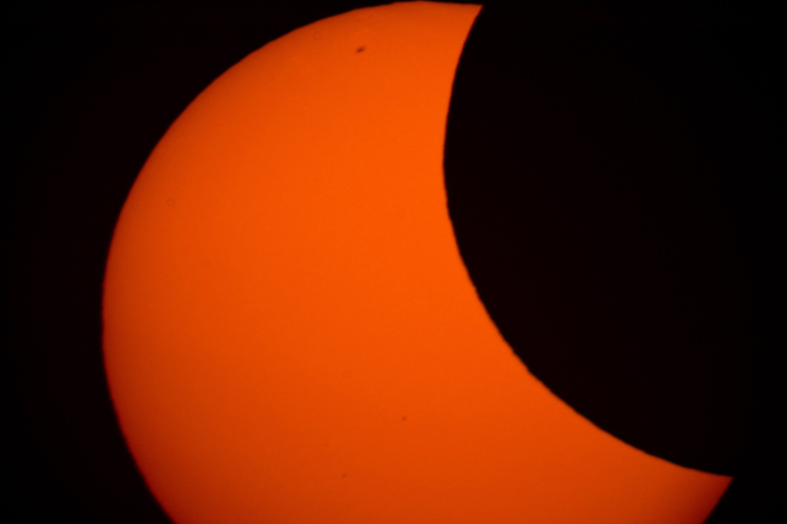
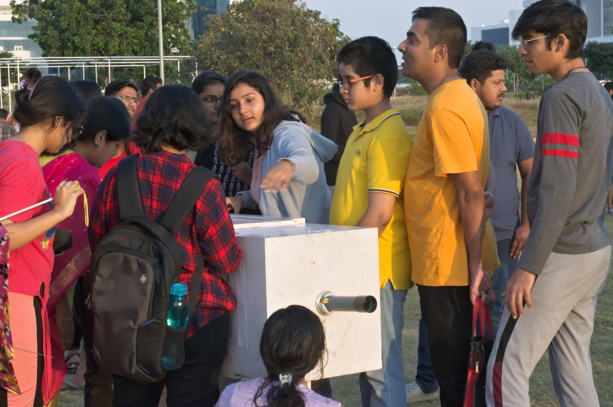
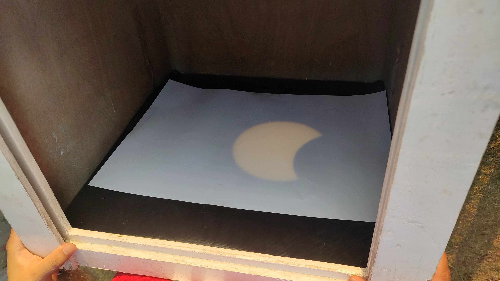
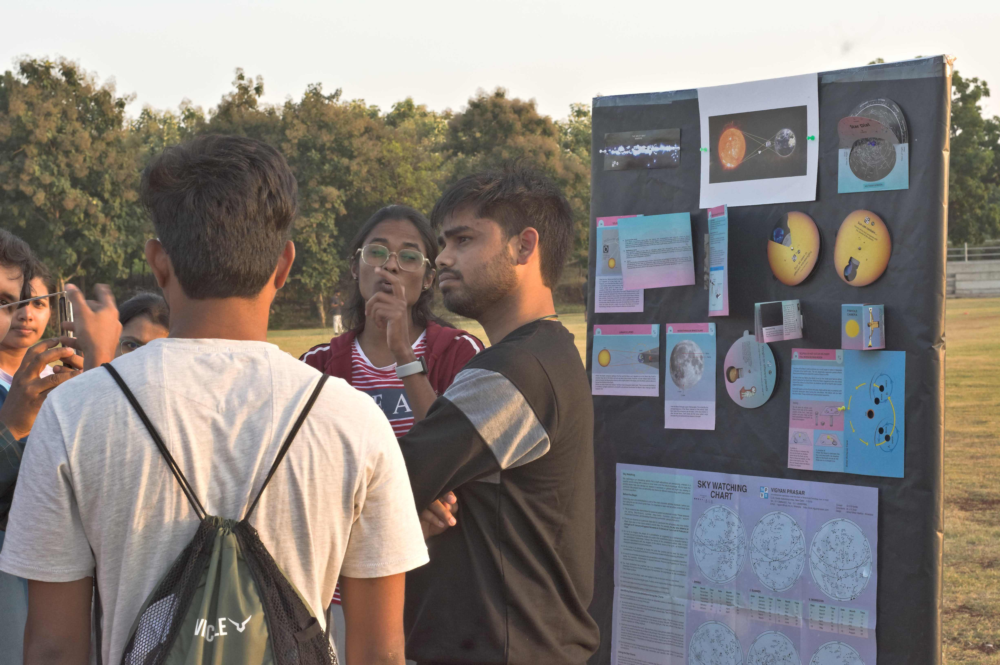
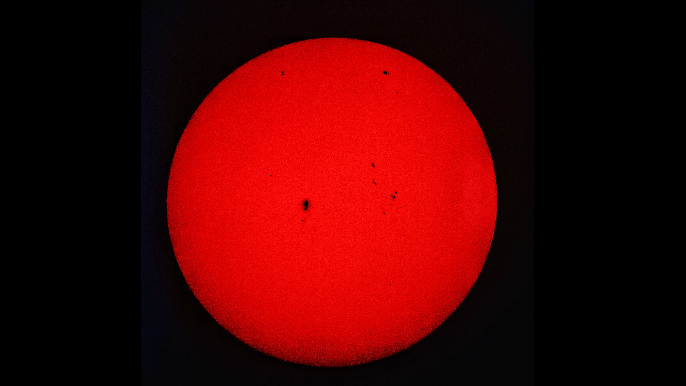
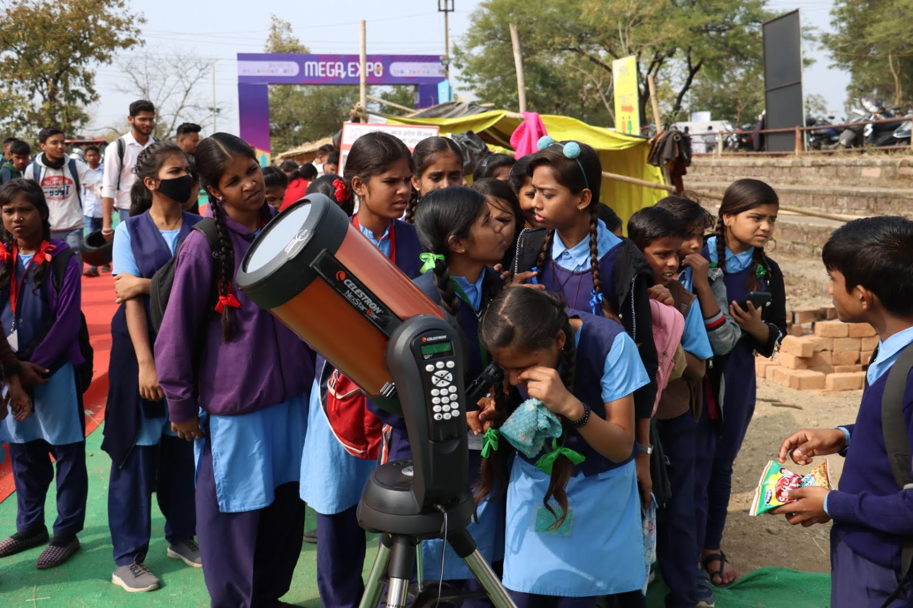

Solar Observations
-

Partial Solar Eclipse observed on 25 October 2022.
-

Taken image of partial solar eclipse.
-

Indirect imaging techniques to see Solar eclipse, Solar Projection Box.
-

Image of partial solar eclipse on the projection box.
-

Attendees discussed various questions with Volunteers.
-

Organised sun-spots Observations sessions for public at IISF, held at MANIT Bhopal.
-

Images of the Sun with sun-spots (Dark patches)
-

Waiting to move clouds from line of sight to the Sun.
-

School children watching the sun and sun-spots.